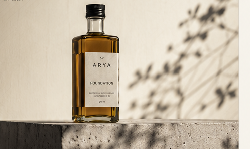
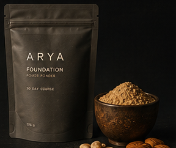

<!DOCTYPE html>
<html lang="ru">
<head>
<meta charset="UTF-8" />
<meta name="viewport" content="width=device-width, initial-scale=1.0" />
<title>ARYA — Final Home</title>
<link rel="preconnect" href="https://fonts.googleapis.com" />
<link rel="preconnect" href="https://fonts.gstatic.com" crossorigin />
<link href="https://fonts.googleapis.com/css2?family=Schibsted+Grotesk:wght@400;500;600;700&family=Spectral:ital,wght@0,300;0,400;0,500;1,300;1,400&family=IBM+Plex+Mono:wght@400;500&display=swap" rel="stylesheet" />
<style>

  :root{
    --paper:#F5F2EC;
    --paper-raise:#FAF8F2;
    --travertine:#E7E0D2;
    --stone:#C9C2B2;
    --ink:#1C1B17;
    --ink-soft:#5C594F;
    --line:rgba(28,27,23,.13);
    --structural:#6E7468;
    --material:#B98428;

    --d-bg:#191712;
    --d-fg:#F1EDE3;
    --d-soft:rgba(241,237,227,.62);
    --d-line:rgba(241,237,227,.16);

    --mono:"IBM Plex Mono",ui-monospace,monospace;
    --serif:"Spectral",Georgia,serif;
    --sans:"Schibsted Grotesk",system-ui,sans-serif;

    --ease:cubic-bezier(.2,.6,.2,1);
    --slow:1100ms;
    --maxw:1500px;
  }
  *{box-sizing:border-box;margin:0;padding:0;}
  html{scroll-behavior:smooth;}
  body{background:var(--paper);color:var(--ink);font-family:var(--sans);-webkit-font-smoothing:antialiased;text-rendering:optimizeLegibility;line-height:1.5;overflow-x:hidden;}
  body.no-motion *{animation:none !important;transition:none !important;}
  img{display:block;max-width:100%;}
  a{color:var(--ink);}
  a:hover{color:var(--structural);}

  .mono{font-family:var(--mono);font-size:11px;letter-spacing:.26em;text-transform:uppercase;color:var(--ink-soft);}
  .wrap{max-width:var(--maxw);margin:0 auto;padding:0 clamp(28px,6vw,110px);}

  .reveal{opacity:0;transform:translateY(14px);transition:opacity var(--slow) var(--ease),transform var(--slow) var(--ease);}
  .reveal.in{opacity:1;transform:none;}
  .reveal.d1{transition-delay:.12s;}
  .reveal.d2{transition-delay:.24s;}
  .reveal.d3{transition-delay:.36s;}
  @media(prefers-reduced-motion:reduce){.reveal{opacity:1 !important;transform:none !important;transition:none;}}

  /* plates */
  .plate{position:relative;display:block;width:100%;
    background:repeating-linear-gradient(135deg,transparent 0 12px,rgba(28,27,23,.028) 12px 13px),linear-gradient(180deg,var(--pl-a,#ECE6D9),var(--pl-b,#DfD7C6));
    border:1px solid var(--line);overflow:hidden;}
  .plate::after{content:attr(data-mode);position:absolute;top:14px;left:14px;font-family:var(--mono);font-size:9.5px;letter-spacing:.12em;color:var(--ink-soft);opacity:.55;text-transform:uppercase;}
  .plate .cap{position:absolute;left:14px;right:14px;bottom:12px;font-family:var(--mono);font-size:10px;letter-spacing:.05em;color:var(--ink);background:rgba(245,242,236,.78);padding:6px 9px;border:1px solid var(--line);text-transform:uppercase;}
  .plate img.ph{position:absolute;inset:0;width:100%;height:100%;object-fit:cover;}
  .plate.has-photo::after{display:none;}

  /* header */
  .nav{position:fixed;top:0;left:0;right:0;z-index:40;display:flex;align-items:center;justify-content:space-between;
    padding:18px clamp(20px,6vw,72px);transition:background var(--slow) var(--ease),border-color var(--slow) var(--ease);
    border-bottom:1px solid transparent;}
  .nav.lit{background:rgba(240,237,230,.96);border-bottom-color:var(--line);}
  .nav .mk{font-weight:600;letter-spacing:.44em;font-size:14px;}
  .nav .links{display:flex;gap:clamp(16px,2.4vw,38px);align-items:center;}
  .nav .links a{text-decoration:none;color:var(--ink-soft);font-size:13px;letter-spacing:.02em;transition:color .4s var(--ease);}
  .nav .links a:hover{color:var(--ink);}
  .nav .cart{font-family:var(--mono);font-size:11px;letter-spacing:.16em;color:var(--ink);text-transform:uppercase;}
  @media(max-width:680px){.nav .links a:not(.cart){display:none;}}

  .ep{position:relative;}
  .pad{padding:clamp(80px,13vh,170px) 0;}

  /* 01 · hero */
  .hero{min-height:100svh;display:flex;align-items:center;padding-top:80px;padding-bottom:48px;}
  .hero-grid{display:grid;grid-template-columns:1.15fr .85fr;gap:clamp(28px,5vw,80px);align-items:center;width:100%;}
  @media(max-width:860px){.hero-grid{grid-template-columns:1fr;gap:36px;}}
  .hero h1{font-size:clamp(46px,6.8vw,96px);line-height:1.02;font-weight:400;letter-spacing:-.028em;text-wrap:balance;max-width:14ch;}
  .hero .sub{margin-top:clamp(18px,2vw,24px);font-size:clamp(14px,1.2vw,16px);color:var(--ink-soft);max-width:30ch;line-height:1.6;}
  .hero .act{margin-top:clamp(28px,3.4vw,40px);display:inline-flex;}
  .hero-plate{height:min(82svh,880px);}
  @media(max-width:860px){.hero-plate{height:min(64svh,560px);}}

  /* 02 · философия — один экран */
  .philo{min-height:92svh;display:flex;align-items:center;padding:clamp(80px,12vh,150px) 0;}
  .philo-grid{display:grid;grid-template-columns:1.1fr .9fr;gap:clamp(36px,6vw,110px);align-items:center;width:100%;}
  @media(max-width:900px){.philo-grid{grid-template-columns:1fr;gap:44px;}}
  .philo-copy .mono{display:block;margin-bottom:clamp(22px,3vw,34px);}
  .philo-big{font-family:var(--serif);font-weight:300;font-size:clamp(40px,5.6vw,84px);line-height:1.02;letter-spacing:-.02em;max-width:15ch;text-wrap:balance;}
  .philo-sub{margin-top:clamp(22px,2.8vw,34px);font-size:clamp(15px,1.4vw,18px);color:var(--ink-soft);line-height:1.7;max-width:44ch;text-wrap:pretty;}
  .philo-bridge{margin-top:clamp(30px,4vw,46px);padding-top:clamp(20px,2.6vw,28px);border-top:1px solid var(--line);
    font-family:var(--serif);font-style:italic;font-weight:300;font-size:clamp(20px,2.4vw,32px);line-height:1.2;letter-spacing:-.01em;max-width:24ch;}
  .philo-plate{aspect-ratio:4/3;}
  .facts{list-style:none;border-top:1px solid var(--line);margin-top:26px;}
  .facts li{display:flex;align-items:baseline;justify-content:space-between;gap:18px;padding:13px 2px;border-bottom:1px solid var(--line);}
  .facts .fk{font-size:15.5px;letter-spacing:-.01em;color:var(--ink);}
  .facts .fv{font-family:var(--mono);font-size:10px;letter-spacing:.13em;text-transform:uppercase;color:var(--ink-soft);text-align:right;flex:0 0 auto;}

  /* 03 · foundation как продукт (тёмная полоса) */
  .fnd2{background:var(--d-bg);color:var(--d-fg);padding:clamp(70px,11vh,140px) 0;}
  .fnd2 .mono{color:var(--d-soft);}
  .fnd2-grid{display:grid;grid-template-columns:1.08fr .92fr;gap:clamp(36px,6vw,100px);align-items:center;}
  @media(max-width:960px){.fnd2-grid{grid-template-columns:1fr;gap:44px;}}
  .fnd2-eyebrow{display:block;margin-bottom:clamp(20px,2.6vw,28px);letter-spacing:.3em;}
  .fnd2-big{font-family:var(--serif);font-weight:300;font-size:clamp(32px,4.4vw,64px);line-height:1.04;letter-spacing:-.018em;max-width:18ch;text-wrap:balance;}
  .fnd2-concept{margin-top:clamp(18px,2.2vw,26px);font-size:clamp(15px,1.4vw,17.5px);color:var(--d-soft);line-height:1.68;max-width:52ch;text-wrap:pretty;}
  .fnd2-concept em{font-style:italic;color:var(--d-fg);}
  .fnd2-label{font-family:var(--mono);font-size:10px;letter-spacing:.18em;text-transform:uppercase;color:var(--d-soft);margin-bottom:14px;}
  .fnd2-compo{margin-top:clamp(28px,3.4vw,40px);}
  .compo-bar{display:flex;height:44px;border:1px solid var(--d-line);overflow:hidden;}
  .compo-seg{position:relative;}
  .compo-legend{margin-top:14px;display:grid;grid-template-columns:repeat(4,1fr);gap:12px;}
  @media(max-width:680px){.compo-legend{grid-template-columns:repeat(2,1fr);}}
  .compo-legend .lg{display:flex;flex-direction:column;gap:4px;}
  .compo-legend .sw{width:20px;height:9px;}
  .compo-legend .ln{font-size:14px;color:var(--d-fg);}
  .compo-legend .pc{font-family:var(--mono);font-size:10.5px;letter-spacing:.08em;color:var(--d-soft);}
  .fnd2-rows{margin-top:clamp(26px,3.2vw,38px);border-top:1px solid var(--d-line);}
  .fr{display:grid;grid-template-columns:minmax(130px,.34fr) 1fr;gap:18px;padding:13px 2px;border-bottom:1px solid var(--d-line);align-items:baseline;}
  .fr .frk{font-family:var(--mono);font-size:10px;letter-spacing:.14em;text-transform:uppercase;color:var(--material);}
  .fr .frv{font-size:14.5px;color:var(--d-fg);line-height:1.5;}
  .fnd2-cta{margin-top:clamp(28px,3.6vw,44px);display:flex;align-items:center;justify-content:space-between;gap:24px;flex-wrap:wrap;}
  .fnd2-name{font-size:clamp(20px,2.2vw,28px);font-weight:400;letter-spacing:-.02em;display:block;}
  .fnd2-spec{font-family:var(--mono);font-size:11px;letter-spacing:.1em;text-transform:uppercase;color:var(--d-soft);display:block;margin-top:5px;}
  .fnd2-photo{position:relative;}
  .fnd2-photo img{width:100%;max-width:560px;border:1px solid var(--d-line);}
  .fnd2-photo figcaption{margin-top:12px;font-size:9.5px;letter-spacing:.14em;color:var(--d-soft);}
  /* light variant via tweak */
  body.fnd-light .fnd2{background:var(--travertine);color:var(--ink);}
  body.fnd-light .fnd2 .mono,body.fnd-light .fnd2-concept,body.fnd-light .fnd2-label,body.fnd-light .fnd2-spec,body.fnd-light .fnd2-photo figcaption{color:var(--ink-soft);}
  body.fnd-light .fnd2-concept em,body.fnd-light .fr .frv,body.fnd-light .compo-legend .ln{color:var(--ink);}
  body.fnd-light .compo-bar,body.fnd-light .fnd2-rows,body.fnd-light .fnd2-photo img{border-color:var(--line);}
  body.fnd-light .fr{border-color:var(--line);}
  body.fnd-light .fr .frk{color:var(--structural);}
  body.fnd-light .fnd2 .btn-inverse{border-color:var(--ink);background:var(--ink);color:var(--paper);}
  body.fnd-light .fnd2 .btn-inverse:hover{background:none;color:var(--ink);}

  /* section head (подбор, масла) */
  .section-head{max-width:48ch;}
  .section-head .mono{display:block;margin-bottom:22px;}
  .section-head h2{font-family:var(--serif);font-weight:300;font-size:clamp(30px,4.4vw,58px);line-height:1.05;letter-spacing:-.015em;text-wrap:balance;}
  .section-head .sh-sub{margin-top:20px;font-size:clamp(15px,1.5vw,18px);color:var(--ink-soft);line-height:1.62;max-width:44ch;}

  /* 04 · подбор по состояниям */
  .quiz-grid{margin-top:clamp(38px,5vw,60px);display:grid;grid-template-columns:repeat(4,1fr);gap:12px;}
  @media(max-width:1020px){.quiz-grid{grid-template-columns:repeat(2,1fr);}}
  @media(max-width:560px){.quiz-grid{grid-template-columns:1fr;}}
  .qbtn{display:flex;flex-direction:column;gap:7px;text-align:left;padding:20px 22px;background:var(--paper);border:1px solid var(--line);cursor:pointer;font-family:inherit;transition:border-color .4s var(--ease),background .4s var(--ease);}
  .qbtn:hover{border-color:var(--ink);}
  .qbtn .qn{font-size:18px;font-weight:500;letter-spacing:-.01em;}
  .qbtn .qh{font-family:var(--mono);font-size:9.5px;letter-spacing:.06em;text-transform:uppercase;color:var(--ink-soft);line-height:1.5;}
  .qbtn[aria-pressed="true"]{background:var(--ink);border-color:var(--ink);}
  .qbtn[aria-pressed="true"] .qn{color:var(--paper);}
  .qbtn[aria-pressed="true"] .qh{color:var(--stone);}

  .result{margin-top:clamp(30px,4vw,46px);border:1px solid var(--ink);background:var(--paper-raise);animation:resIn .6s var(--ease);}
  @keyframes resIn{from{opacity:0;transform:translateY(16px);}to{opacity:1;transform:none;}}
  .res-block{padding:clamp(24px,3vw,40px);border-bottom:1px solid var(--line);}
  .res-block:last-child{border-bottom:0;}
  .res-eyebrow{font-family:var(--mono);font-size:10px;letter-spacing:.2em;text-transform:uppercase;color:var(--structural);}
  .res-state{font-weight:400;font-size:clamp(24px,3vw,40px);line-height:1.08;letter-spacing:-.022em;margin-top:14px;}
  .res-frame-body{margin-top:16px;font-size:clamp(15px,1.5vw,17px);line-height:1.62;color:var(--ink-soft);max-width:56ch;}
  .step-tag{font-family:var(--mono);font-size:10px;letter-spacing:.18em;text-transform:uppercase;color:var(--structural);}
  .horizon .hz-main{margin-top:13px;font-family:var(--serif);font-weight:300;font-size:clamp(19px,2.1vw,27px);line-height:1.34;color:var(--ink);max-width:44ch;}
  .proto{margin-top:18px;border-top:1px solid var(--line);}
  .proto-row{display:grid;grid-template-columns:minmax(120px,auto) 1fr;gap:clamp(16px,2.4vw,34px);align-items:baseline;padding:15px 2px;border-bottom:1px solid var(--line);}
  .proto-row .pr-name{font-size:clamp(17px,1.8vw,22px);font-weight:400;letter-spacing:-.01em;}
  .proto-row.core .pr-name{font-weight:500;}
  .proto-row .pr-note{font-size:14.5px;color:var(--ink-soft);line-height:1.5;}
  .proto-row .pr-tag{font-family:var(--mono);font-size:9px;letter-spacing:.14em;text-transform:uppercase;color:var(--structural);display:block;margin-bottom:5px;}
  .proto-foot{margin-top:22px;display:flex;align-items:center;gap:22px;flex-wrap:wrap;}
  .price{font-family:var(--mono);font-size:13px;letter-spacing:.1em;color:var(--ink);}

  /* 05 · масла — карточки */
  .oilgrid{margin-top:clamp(38px,5vw,60px);display:grid;grid-template-columns:repeat(4,1fr);gap:14px;}
  @media(max-width:1080px){.oilgrid{grid-template-columns:repeat(2,1fr);}}
  @media(max-width:540px){.oilgrid{grid-template-columns:1fr;}}
  .ocard{display:flex;flex-direction:column;text-align:left;background:var(--paper-raise);border:1px solid var(--line);cursor:pointer;font-family:inherit;padding:0;transition:border-color .4s var(--ease),transform .5s var(--ease),box-shadow .5s var(--ease);}
  .ocard:hover{border-color:var(--ink);transform:translateY(-3px);box-shadow:0 22px 44px -30px rgba(28,27,23,.35);}
  .ocard[aria-pressed="true"]{border-color:var(--ink);box-shadow:0 22px 44px -30px rgba(28,27,23,.35);}
  .oimg{display:flex;align-items:flex-end;justify-content:center;height:190px;background:#F1EDE2;border-bottom:1px solid var(--line);overflow:hidden;}
  .oimg img{height:176px;width:auto;mix-blend-mode:multiply;}
  .obody{display:flex;flex-direction:column;gap:7px;padding:18px 18px 8px;}
  .onum2{font-family:var(--mono);font-size:9.5px;letter-spacing:.2em;color:var(--structural);}
  .oname2{font-size:clamp(18px,1.6vw,22px);font-weight:400;letter-spacing:-.015em;}
  .oprev2{font-size:13px;color:var(--ink-soft);line-height:1.5;text-wrap:pretty;}
  .omore{font-family:var(--mono);font-size:9.5px;letter-spacing:.14em;text-transform:uppercase;color:var(--ink);padding:12px 18px 16px;margin-top:auto;}

  .oildetail{margin-top:clamp(26px,3.4vw,40px);border:1px solid var(--ink);background:var(--paper-raise);padding:clamp(24px,3vw,42px);animation:resIn .6s var(--ease);}
  .od-head{display:flex;align-items:baseline;gap:18px;flex-wrap:wrap;border-bottom:1px solid var(--line);padding-bottom:18px;}
  .od-name{font-size:clamp(24px,2.8vw,36px);font-weight:400;letter-spacing:-.02em;}
  .od-flag{font-family:var(--mono);font-size:9px;letter-spacing:.12em;text-transform:uppercase;color:var(--ink-soft);border:1px solid var(--line);padding:3px 7px;}
  .od-price{margin-left:auto;font-family:var(--mono);font-size:12px;letter-spacing:.1em;color:var(--ink);}
  .od-grid{margin-top:22px;display:grid;grid-template-columns:1fr 1fr;gap:clamp(20px,3vw,40px);}
  @media(max-width:760px){.od-grid{grid-template-columns:1fr;gap:22px;}}
  .oil-block{border-top:1px solid var(--line);padding-top:14px;}
  .oil-block h5{font-family:var(--mono);font-size:9.5px;letter-spacing:.14em;text-transform:uppercase;color:var(--structural);margin-bottom:10px;}
  .oil-block p{font-size:14.5px;line-height:1.6;color:var(--ink);}
  .oil-block .bridge-f{margin-top:10px;font-family:var(--mono);font-size:10px;letter-spacing:.06em;text-transform:uppercase;color:var(--material);}
  .od-foot{margin-top:26px;display:flex;align-items:center;gap:16px;flex-wrap:wrap;}

  /* 06 · производство */
  .press-head{max-width:34ch;}
  .press-head .mono{display:block;margin-bottom:20px;}
  .press-head h2{font-size:clamp(26px,3.6vw,46px);font-weight:400;letter-spacing:-.02em;line-height:1.06;}
  .steps{margin-top:clamp(40px,6vw,64px);display:grid;grid-template-columns:repeat(3,1fr);gap:clamp(20px,3vw,48px);}
  @media(max-width:760px){.steps{grid-template-columns:1fr;gap:30px;}}
  .step{border-top:1px solid var(--ink);padding-top:18px;}
  .step-img{display:block;margin-bottom:16px;}
  .step-img img{height:150px;width:auto;border:1px solid var(--line);}
  .step .no{font-family:var(--mono);font-size:10px;letter-spacing:.2em;color:var(--structural);}
  .step h4{font-size:19px;font-weight:500;margin-top:12px;letter-spacing:-.01em;}
  .step p{font-size:14px;color:var(--ink-soft);line-height:1.6;margin-top:10px;max-width:36ch;}
  .press-final{margin-top:clamp(40px,6vw,60px);font-family:var(--serif);font-weight:300;font-size:clamp(22px,2.6vw,34px);line-height:1.2;letter-spacing:-.01em;}

  /* 07 · финальный CTA */
  .invite{text-align:center;padding:clamp(110px,18vh,230px) 0;}
  .invite .mono{display:block;margin-bottom:30px;}
  .invite h2{font-size:clamp(34px,6vw,88px);font-weight:400;line-height:.98;letter-spacing:-.025em;max-width:16ch;margin:0 auto;text-wrap:balance;}
  .invite-act{margin-top:46px;display:inline-flex;gap:14px;flex-wrap:wrap;justify-content:center;}

  /* buttons */
  .btn{font-family:var(--sans);font-size:14px;letter-spacing:.02em;border:1px solid var(--ink);background:none;color:var(--ink);padding:15px 30px;cursor:pointer;transition:background .5s var(--ease),color .5s var(--ease);text-decoration:none;display:inline-flex;align-items:center;gap:10px;}
  .btn:hover{background:var(--ink);color:var(--paper);}
  .btn-ghost{border-color:var(--line);color:var(--ink-soft);}
  .btn-ghost:hover{border-color:var(--ink);background:none;color:var(--ink);}
  .btn-inverse{border-color:var(--d-fg);background:var(--d-fg);color:var(--d-bg);}
  .btn-inverse:hover{background:none;color:var(--d-fg);}
  .btn-sm{font-family:var(--sans);font-size:13px;letter-spacing:.01em;border:1px solid var(--ink);background:none;color:var(--ink);padding:11px 22px;cursor:pointer;transition:background .4s var(--ease),color .4s var(--ease),border-color .4s var(--ease);display:inline-flex;align-items:center;gap:8px;text-decoration:none;}
  .btn-sm:hover{background:var(--ink);color:var(--paper);}
  .btn-sm.solid{background:var(--ink);color:var(--paper);}
  .btn-sm.solid:hover{background:var(--structural);border-color:var(--structural);}
  .btn-sm.added{background:var(--structural);border-color:var(--structural);color:var(--paper);}

  /* footer */
  .foot{border-top:1px solid var(--line);padding:clamp(46px,6vw,72px) 0 40px;}
  .foot-grid{display:flex;justify-content:space-between;gap:30px;flex-wrap:wrap;align-items:flex-start;}
  .foot .mk{font-weight:600;letter-spacing:.42em;font-size:14px;}
  .foot .cols{display:flex;gap:clamp(30px,6vw,90px);flex-wrap:wrap;}
  .foot .col h6{font-family:var(--mono);font-size:9.5px;letter-spacing:.16em;text-transform:uppercase;color:var(--ink-soft);margin-bottom:14px;font-weight:500;}
  .foot .col a{display:block;text-decoration:none;color:var(--ink);font-size:14px;margin-bottom:9px;transition:color .4s;}
  .foot .col a:hover{color:var(--structural);}
  .foot .legal{margin-top:50px;display:flex;justify-content:space-between;gap:20px;flex-wrap:wrap;font-family:var(--mono);font-size:9.5px;letter-spacing:.12em;color:var(--ink-soft);text-transform:uppercase;}

  /* cart */
  .cart-bar{position:fixed;left:0;right:0;bottom:0;z-index:55;background:rgba(240,237,230,.97);border-top:1px solid var(--ink);transform:translateY(120%);transition:transform .6s var(--ease);}
  .cart-bar.show{transform:none;}
  .cart-inner{max-width:var(--maxw);margin:0 auto;padding:15px clamp(20px,6vw,72px);display:flex;align-items:center;justify-content:space-between;gap:24px;flex-wrap:wrap;}
  .cart-items{display:flex;align-items:center;gap:16px;flex-wrap:wrap;}
  .cart-items .ci{display:flex;align-items:center;gap:9px;font-size:13px;color:var(--ink);}
  .cart-items .ci .dot{width:6px;height:6px;background:var(--structural);flex:0 0 auto;}
  .cart-items .ci button{background:none;border:0;cursor:pointer;color:var(--ink-soft);font-size:14px;line-height:1;padding:0 0 0 2px;transition:color .3s;}
  .cart-items .ci button:hover{color:var(--ink);}
  .cart-right{display:flex;align-items:center;gap:22px;}
  .cart-total{font-family:var(--mono);font-size:11px;letter-spacing:.12em;color:var(--ink-soft);text-transform:uppercase;}
  .cart-total b{color:var(--ink);font-weight:500;}

  .progress{position:fixed;top:0;left:0;height:2px;background:var(--structural);z-index:60;width:0;}


  /* arya-final-home — hero & section styles */
  .hero-grid{display:grid;grid-template-columns:1.15fr .85fr;gap:clamp(28px,5vw,80px);align-items:center;width:100%;}
  @media(max-width:860px){.hero-grid{grid-template-columns:1fr;gap:36px;}}
  .hero h1{font-size:clamp(46px,6.8vw,96px);line-height:1.02;font-weight:400;letter-spacing:-.028em;text-wrap:balance;max-width:14ch;}
  .hero .sub{margin-top:clamp(18px,2vw,24px);font-size:clamp(14px,1.2vw,16px);color:var(--ink-soft);max-width:32ch;line-height:1.6;}
  .hero .under{display:block;margin-top:16px;font-family:var(--mono);font-size:11px;letter-spacing:.16em;text-transform:uppercase;color:var(--ink-soft);}
  .hero-ph{margin:0;}
  .hero-ph img{width:100%;object-fit:cover;}

  /* pick section */
  .pick{padding:clamp(80px,12vh,150px) 0;}
  .q{font-family:var(--serif);font-weight:300;font-size:clamp(32px,4.8vw,64px);line-height:1.04;letter-spacing:-.02em;margin:18px 0 0;}
  .q-sub{margin-top:18px;font-size:clamp(15px,1.4vw,17px);color:var(--ink-soft);line-height:1.65;max-width:52ch;}
  .chips{margin-top:clamp(28px,4vw,44px);display:flex;flex-wrap:wrap;gap:10px;}
  .chip{display:flex;flex-direction:column;gap:5px;text-align:left;padding:16px 20px;background:var(--paper);border:1px solid var(--line);cursor:pointer;font-family:inherit;transition:border-color .4s var(--ease),background .4s var(--ease);}
  .chip b{font-size:16px;font-weight:500;letter-spacing:-.01em;color:var(--ink);}
  .chip i{font-style:normal;font-family:var(--mono);font-size:9.5px;letter-spacing:.06em;text-transform:uppercase;color:var(--ink-soft);}
  .chip[aria-pressed="true"]{background:var(--ink);border-color:var(--ink);}
  .chip[aria-pressed="true"] b{color:var(--paper);}
  .chip[aria-pressed="true"] i{color:var(--stone);}

  /* result cards */
  .result{margin-top:clamp(30px,4vw,46px);border:1px solid var(--ink);background:var(--paper-raise);animation:resIn .6s var(--ease);padding:clamp(24px,3vw,40px);}
  .res-tag{font-family:var(--mono);font-size:10px;letter-spacing:.2em;text-transform:uppercase;color:var(--structural);margin-bottom:24px;}
  .ocard-r{display:grid;grid-template-columns:160px 1fr;gap:24px;border-top:1px solid var(--line);padding-top:22px;margin-top:22px;}
  @media(max-width:600px){.ocard-r{grid-template-columns:1fr;}}
  .ocard-ph{background:#F1EDE2;border:1px solid var(--line);display:flex;align-items:flex-end;justify-content:center;height:160px;}
  .ocard-ph img{height:148px;width:auto;mix-blend-mode:multiply;}
  .ph-empty{font-family:var(--mono);font-size:9px;letter-spacing:.1em;color:var(--ink-soft);text-transform:uppercase;padding-bottom:12px;}
  .ocard-body{display:flex;flex-direction:column;gap:8px;}
  .ocard-body h3{font-family:var(--serif);font-weight:300;font-size:clamp(22px,2.4vw,30px);line-height:1.1;letter-spacing:-.015em;}
  .ocard-why{font-size:14.5px;color:var(--ink-soft);line-height:1.6;max-width:52ch;}
  .ocard-term{font-family:var(--mono);font-size:10px;letter-spacing:.1em;text-transform:uppercase;color:var(--material);margin-top:4px;}
  .ocard-buy{margin-top:auto;padding-top:14px;display:flex;align-items:center;gap:18px;flex-wrap:wrap;}
  .res-alts{margin-top:8px;}
  .res-fnd{margin-top:28px;border-top:1px solid var(--line);padding-top:22px;display:flex;align-items:center;gap:18px;flex-wrap:wrap;}
  .fdot{width:8px;height:8px;border-radius:50%;background:var(--structural);flex:0 0 auto;}
  .res-fnd p{font-size:14px;color:var(--ink-soft);line-height:1.5;flex:1;min-width:200px;}

  /* oils rail */
  .oils{padding:clamp(80px,12vh,150px) 0;}
  .oils-head{display:flex;align-items:flex-start;justify-content:space-between;gap:20px;flex-wrap:wrap;}
  .oils-head h2{font-family:var(--serif);font-weight:300;font-size:clamp(28px,3.6vw,48px);line-height:1.06;letter-spacing:-.018em;}
  .arrows{display:flex;gap:8px;margin-top:6px;}
  .arrows button{width:44px;height:44px;border:1px solid var(--line);background:none;font-size:18px;cursor:pointer;transition:border-color .3s,background .3s;color:var(--ink);}
  .arrows button:hover{border-color:var(--ink);background:var(--ink);color:var(--paper);}
  .rail{margin-top:clamp(28px,4vw,44px);display:flex;gap:14px;overflow-x:auto;scroll-snap-type:x mandatory;-webkit-overflow-scrolling:touch;scrollbar-width:none;}
  .rail::-webkit-scrollbar{display:none;}
  .rail .ocard{min-width:220px;flex:0 0 220px;scroll-snap-align:start;}
  .rail .oimg{height:180px;background:#F1EDE2;border-bottom:1px solid var(--line);display:flex;align-items:flex-end;justify-content:center;}
  .rail .oimg img{height:164px;width:auto;mix-blend-mode:multiply;}
  .rail h4{font-size:17px;font-weight:500;letter-spacing:-.01em;padding:14px 16px 4px;}
  .rail .otask{font-family:var(--mono);font-size:9.5px;letter-spacing:.1em;text-transform:uppercase;color:var(--ink-soft);padding:0 16px;}
  .rail .obuy{padding:12px 16px 16px;margin-top:auto;display:flex;align-items:center;justify-content:space-between;gap:10px;border-top:1px solid var(--line);margin-top:12px;}
  .oils-foot{margin-top:28px;}
  .link-plain{font-family:var(--mono);font-size:11px;letter-spacing:.14em;text-transform:uppercase;color:var(--ink);text-decoration:none;border-bottom:1px solid var(--line);padding-bottom:2px;transition:border-color .3s;}
  .link-plain:hover{border-color:var(--ink);}

  /* foundation */
  .fnd{padding:clamp(80px,12vh,150px) 0;}
  .fnd-grid{display:grid;grid-template-columns:.9fr 1.1fr;gap:clamp(36px,6vw,100px);align-items:center;}
  @media(max-width:900px){.fnd-grid{grid-template-columns:1fr;}}
  .fnd-ph img{width:100%;max-width:500px;border:1px solid var(--line);}
  .fnd-ph figcaption{margin-top:12px;font-family:var(--mono);font-size:9.5px;letter-spacing:.12em;color:var(--ink-soft);text-transform:uppercase;}
  .fnd h2{font-family:var(--serif);font-weight:300;font-size:clamp(32px,4vw,54px);line-height:1.04;letter-spacing:-.018em;margin:18px 0 0;}
  .fnd-p{margin-top:20px;font-size:clamp(15px,1.4vw,17px);color:var(--ink-soft);line-height:1.68;max-width:50ch;}
  .fnd-rows{list-style:none;margin-top:22px;border-top:1px solid var(--line);}
  .fnd-rows li{display:grid;grid-template-columns:80px 1fr;gap:16px;padding:13px 2px;border-bottom:1px solid var(--line);font-size:14px;}
  .fnd-rows b{color:var(--ink);font-weight:500;}
  .fnd-rows span{color:var(--ink-soft);line-height:1.5;}
  .fnd-note{margin-top:18px;font-size:13px;color:var(--ink-soft);line-height:1.55;max-width:48ch;}

  /* press */
  .press{padding:clamp(80px,12vh,150px) 0;}
  .press-ph{margin:clamp(28px,4vw,44px) 0;}
  .press-ph img{width:100%;max-width:800px;border:1px solid var(--line);}
  .proofs{display:grid;grid-template-columns:repeat(3,1fr);gap:clamp(20px,3vw,44px);margin-top:clamp(30px,4vw,44px);}
  @media(max-width:760px){.proofs{grid-template-columns:1fr;gap:22px;}}
  .proof{border-top:1px solid var(--ink);padding-top:16px;}
  .proof b{font-size:17px;font-weight:500;letter-spacing:-.01em;display:block;margin-bottom:10px;}
  .proof span{font-size:14px;color:var(--ink-soft);line-height:1.6;}
  .press-foot{margin-top:clamp(30px,4vw,44px);}

  /* final + footer */
  .final{padding:clamp(110px,18vh,220px) 0 0;}
  .final h2{font-family:var(--serif);font-weight:300;font-size:clamp(34px,5.5vw,78px);line-height:1.0;letter-spacing:-.025em;max-width:18ch;margin:18px 0 0;text-wrap:balance;}
  .final-act{margin-top:40px;}
  .foot{border-top:1px solid var(--line);padding:clamp(40px,6vw,64px) 0 36px;margin-top:clamp(80px,10vh,120px);}
  .foot-grid{display:flex;justify-content:space-between;gap:24px;flex-wrap:wrap;align-items:center;}
  .foot .mk{font-weight:600;letter-spacing:.42em;font-size:14px;}

  /* buttons (compact copies for final-home) */
  .btn.solid{background:var(--ink);color:var(--paper);}
  .btn.solid:hover{background:var(--structural);border-color:var(--structural);}
  .btn.lg{padding:18px 40px;font-size:15px;}
  .btn.sm{font-size:13px;padding:11px 22px;}
  .btn.sm.solid{background:var(--ink);color:var(--paper);}
  .btn.sm.solid:hover{background:var(--structural);border-color:var(--structural);}
  .price{font-family:var(--mono);font-size:12px;letter-spacing:.1em;color:var(--ink);}

  /* currency switcher */
  .cur{display:flex;border:1px solid var(--line);overflow:hidden;}
  .cur button{font-family:var(--mono);font-size:10.5px;letter-spacing:.1em;border:0;background:none;color:var(--ink-soft);padding:6px 10px;cursor:pointer;transition:background .3s,color .3s;}
  .cur button.on{background:var(--ink);color:var(--paper);}

</style>
</head>
<body>
<div id="root"></div>

<script crossorigin src="https://unpkg.com/react@18.3.1/umd/react.development.js"></script>
<script crossorigin src="https://unpkg.com/react-dom@18.3.1/umd/react-dom.development.js"></script>
<script src="https://unpkg.com/@babel/standalone@7.29.0/babel.min.js"></script>
<script type="text/babel">
const { useState, useRef, useEffect } = React;

/* ── продукты: цена в рублях (база), slug для карточки, фото ── */
const PROD = {
  'Кунжутное':      { slug:'kunzhut',      img:'assets/oil-kunzhut.png',     rub:950,  task:'Печень и суставы' },
  'Льняное':        { slug:'len',          img:'assets/oil-len.png',         rub:850,  task:'Мозг и омега-3' },
  'Горчичное':      { slug:'gorchitsa',    img:null,                          rub:790,  task:'Пищеварение и тепло' },
  'Тыквенное':      { slug:'tykva',        img:'assets/oil-tykva.png',       rub:1450, task:'Простата и волосы' },
  'Чёрный тмин':    { slug:'tmin',         img:'assets/oil-tmin.png',        rub:1900, task:'Иммунитет и обмен' },
  'Амарантовое':    { slug:'amarant',      img:'assets/oil-amarant.png',     rub:2400, task:'Кожа и гормоны' },
  'Расторопша':     { slug:'rastoropsha',  img:'assets/oil-rastoropsha.png', rub:1100, task:'Проблемная кожа' },
  'Жмых расторопши':{ slug:'zhmykh',       img:null,                          rub:690,  task:'Печень и кишечник' },
  'Грецкий орех':   { slug:'orekh',        img:'assets/oil-orekh.png',       rub:1300, task:'Сердце и голова' },
  'Фундук':         { slug:'funduk',       img:'assets/oil-funduk.png',      rub:1500, task:'Самое мягкое' },
  'Подсолнечное':   { slug:'podsolnechnoe',img:null,                          rub:650,  task:'Сухая кожа, витамин Е' },
};
const OILS = ['Кунжутное','Льняное','Горчичное','Тыквенное','Чёрный тмин','Амарантовое','Расторопша','Грецкий орех','Фундук','Подсолнечное'];
const cardUrl = (n) => 'ARYA Карточка товара.html?p=' + PROD[n].slug;
const fmt = (n, cur) => cur === 'MDL'
  ? (Math.round(PROD[n].rub * 0.21 / 5) * 5).toLocaleString('ru') + ' lei'
  : PROD[n].rub.toLocaleString('ru') + ' ₽';

/* ── подбор: 12 состояний, у каждого 1 основное + 2 равноценных масла с полным объяснением ── */
const STATES = [
  { id:'liver', name:'Печень', hint:'тяжесть, горечь во рту, реакция на жирное',
    main:{ oil:'Кунжутное', why:'В кунжутном есть два вещества, которых нет больше нигде: сезамин и сезамол. Они защищают клетки печени и помогают им восстанавливаться.', term:'Тяжесть и горечь по утрам уходят за 2–4 недели, анализы — к 6–8 неделе.' },
    alts:[
      { oil:'Жмых расторопши', note:'Если нагрузка на печень постоянная: лекарства, алкоголь, тяжёлое питание. В нём силимарин — самое изученное растительное вещество для печени. Работает глубже масла, а вместе с маслом усваивается полнее.' },
      { oil:'Чёрный тмин', note:'Если хочется одним продуктом закрыть сразу несколько задач. Тимохинон защищает клетки печени и заодно работает с холестерином, сахаром и иммунитетом. Учтите: у тмина серьёзные противопоказания.' }] },
  { id:'digest', name:'Пищеварение', hint:'вздутие, тяжесть, нерегулярный стул',
    main:{ oil:'Горчичное', why:'Запускает выработку пищеварительных соков и отделение желчи — отсюда лёгкость вместо тяжести после еды.', term:'Самое быстрое действие в линейке: от нескольких дней до двух недель.' },
    alts:[
      { oil:'Льняное', note:'Если главное неудобство — нерегулярность. Мягко налаживает работу кишечника, и это чувствуется быстрее всего остального. Требует холодильника и не терпит нагрева.' },
      { oil:'Чёрный тмин', note:'Если беспокоят вздутие и дискомфорт в желудке. Уменьшает тяжесть, поддерживает при гастрите, есть данные о действии против бактерии, вызывающей гастрит и язву.' }] },
  { id:'skin', name:'Кожа', hint:'сухость, шелушение, воспаления',
    main:{ oil:'Подсолнечное', why:'Кожа строит защитную плёнку из линолевой кислоты, а в подсолнечном её больше всего. В исследовании оно восстановило барьер кожи — лучше оливкового.', term:'Барьер восстанавливается около 4 недель.' },
    alts:[
      { oil:'Расторопша', note:'При высыпаниях: у склонной к акне кожи не хватает линолевой кислоты — жир густеет и забивает поры. В масле расторопши её около половины состава, оно возвращает коже ровно то, чего не хватает.' },
      { oil:'Амарантовое', note:'При возрастных изменениях: кожа сама вырабатывает сквален, но с возрастом его меньше. В амарантовом сквалена 6–8%, в десятки раз больше — кожа принимает его как своё.' }] },
  { id:'energy', name:'Энергия', hint:'усталость днём, рассеянность',
    main:{ oil:'Чёрный тмин', why:'Тонус замечают раньше всего остального. В исследованиях на людях чёрный тмин улучшал память, внимание и скорость мышления.', term:'Заметно на первой-второй неделе.' },
    alts:[
      { oil:'Грецкий орех', note:'Если усталость больше в голове, чем в теле. Мозг больше чем наполовину из жира, и омега-3 его материал: отсюда скорость мышления и ясность. Мягче тмина по вкусу и без его ограничений.' },
      { oil:'Амарантовое', note:'Если усталость идёт вместе с плохим сном и головной болью. Сквален и витамин Е снимают окислительную нагрузку, с которой во многом связано ощущение износа.' }] },
  { id:'joints', name:'Суставы', hint:'утренняя скованность, дискомфорт',
    main:{ oil:'Кунжутное', why:'Работает с двух сторон: внутрь снижает воспалительный фон, наружно — втирание при артрозе колена в исследовании не уступило аптечной мази.', term:'Утренняя скованность отступает за 4–6 недель.' },
    alts:[
      { oil:'Горчичное', note:'Если суставы отзываются на холод и сырость. Усиливает приток крови к больному месту и даёт живое, глубокое тепло. Хорошо после нагрузки и при затёкших мышцах. Только наружно для этой задачи.' },
      { oil:'Чёрный тмин', note:'Если воспаление системное. При ревматоидном артрите месяц приёма уменьшает боль и утреннюю скованность, а воспаление снижается — это видно по анализам крови.' }] },
  { id:'nerves', name:'Нервная система', hint:'напряжение, сон, концентрация',
    main:{ oil:'Льняное', why:'Мозг больше чем наполовину состоит из жира, и омега-3 — главный материал его клеток. Льняное — самый богатый растительный источник омега-3.', term:'Только холодным, хранить в холодильнике.' },
    alts:[
      { oil:'Грецкий орех', note:'То же самое, но проще в обращении и вкуснее. Омега-3 меньше, зато масло устойчивее и не требует такой строгости в хранении.' },
      { oil:'Чёрный тмин', note:'Если на первом месте концентрация и ясность. В исследованиях улучшал память, внимание и скорость мышления. Даёт заметный тонус уже на первой-второй неделе.' }] },
  { id:'heart', name:'Сердце и сосуды', hint:'холестерин, давление, профилактика',
    main:{ oil:'Грецкий орех', why:'Единственное масло, проверенное строгим исследованием именно как масло: каждый пятый вышел на здоровый уровень холестерина — в группе пустышки таких не было.', term:'Курс 3 месяца — столько длилось исследование.' },
    alts:[
      { oil:'Чёрный тмин', note:'Если важнее давление. Обобщения исследований подтверждают снижение, эффект накопительный и набирается за 6–8 недель. Заодно работает с холестерином и сахаром.' },
      { oil:'Кунжутное', note:'Если хочется мягко и надолго. Лучше всего снижает триглицериды, а давление опускает постепенно, эффект держится ещё месяц-два после курса. Самое спокойное из трёх, легко принимать долго.' }] },
  { id:'sugar', name:'Сахар и обмен', hint:'тяга к сладкому, скачки энергии, вес',
    main:{ oil:'Чёрный тмин', why:'Выравнивает то, насколько ровно организм обрабатывает сахар, и заодно приводит в порядок холестерин — эти вещи ходят вместе.', term:'Заметные изменения — 8–12 недель.' },
    alts:[
      { oil:'Грецкий орех', note:'Если диагноз уже поставлен. Оба исследования на этом масле проводились именно на людях с диабетом второго типа, и оно улучшало у них и сахар, и жиры крови.' },
      { oil:'Фундук', note:'Самое мягкое из трёх. Есть данные, что фундук справляется с уровнем сахара лучше грецкого ореха и миндаля. Работает через олеиновую кислоту, которой в нём больше, чем в оливковом масле.' }] },
  { id:'immune', name:'Иммунитет', hint:'частые простуды, восстановление',
    main:{ oil:'Чёрный тмин', why:'Помогает телу держать оборону постоянно. По аллергии — самая крепкая база: обобщение восьми клинических исследований.', term:'Курс 1–2 месяца, затем перерыв. Прочитайте противопоказания.' },
    alts:[
      { oil:'Амарантовое', note:'Если ограничения тмина вам не подходят. У сквалена есть свойство усиливать иммунный ответ — настолько, что он применяется в медицине как усилитель вакцин. Мягкое масло почти без противопоказаний.' },
      { oil:'Горчичное', note:'Для сезона простуд и кашля. Растирание груди и спины даёт согревающий эффект, который облегчает дыхание. Плюс природные горчичные соединения с антибактериальным действием.' }] },
  { id:'hormones', name:'Гормоны', hint:'ПМС, цикл, менопауза',
    main:{ oil:'Амарантовое', why:'Гормоны организм не берёт извне — он строит их сам, из сквалена. В амарантовом его 6–8%, в десятки раз больше, чем в любом другом масле.', term:'Чайная ложка в день, можно постоянно.' },
    alts:[
      { oil:'Тыквенное', note:'Для периода менопаузы. Помогает мягче пройти это время и удержать холестерин, который в такие годы часто уходит вверх.' },
      { oil:'Чёрный тмин', note:'Если есть вопросы к щитовидной железе. При аутоиммунном тиреоидите в исследовании улучшились показатели работы железы и снизился уровень антител. Приём при аутоиммунных состояниях согласуйте с врачом.' }] },
  { id:'hair', name:'Волосы', hint:'выпадение, ломкость, тусклость',
    main:{ oil:'Тыквенное', why:'Лучшие данные среди всех масел: в строгом исследовании за полгода количество волос выросло на 40% — против 10% на пустышке.', term:'Первые изменения — 8–12 недель. Здесь нужно терпение.' },
    alts:[
      { oil:'Кунжутное', note:'При ломкости и тусклости. Возвращает блеск за 3–4 недели, структуру — за 4–6. Быстрее заметно, чем прирост густоты, и работает внутрь и наружно.' },
      { oil:'Горчичное', note:'Для укрепления корней. Усиливает приток крови к коже головы, питает корни, придаёт волосам плотность. Наносится как бальзам на 20 минут перед мытьём.' }] },
  { id:'men', name:'Мужское здоровье', hint:'ночные подъёмы, профилактика после 45',
    main:{ oil:'Тыквенное', why:'При увеличенной простате заметно облегчает симптомы — в исследованиях работало мягче аптечного препарата и без побочных эффектов.', term:'Заметно к 4-й неделе, устойчиво — к 12-й.' },
    alts:[
      { oil:'Чёрный тмин', note:'Для репродуктивного здоровья. В исследовании именно на масле, 5 мл в день два месяца, улучшились количество, подвижность и строение сперматозоидов.' },
      { oil:'Амарантовое', note:'Для гормонального фона в целом. Из сквалена организм строит собственные гормоны, а амарант — его главный источник среди масел.' }] },
];

function useReveal() {
  useEffect(() => {
    const io = new IntersectionObserver(es => es.forEach(e => { if (e.isIntersecting) { e.target.classList.add('in'); io.unobserve(e.target); } }), { threshold:.12 });
    document.querySelectorAll('.reveal').forEach(el => io.observe(el));
    return () => io.disconnect();
  }, []);
}

function Nav({ cur, setCur }) {
  useEffect(() => {
    const n = document.getElementById('nav');
    const on = () => n.classList.toggle('lit', window.scrollY > 40);
    window.addEventListener('scroll', on); on();
    return () => window.removeEventListener('scroll', on);
  }, []);
  return (<nav className="nav" id="nav"><div className="mk">ARYA</div>
    <div className="links"><a href="#pick">Подбор</a><a href="#oils">Масла</a><a href="#foundation">Foundation</a><a href="#press">Производство</a>
      <div className="cur" role="group" aria-label="Валюта">
        <button className={cur==='RUB'?'on':''} onClick={()=>setCur('RUB')}>₽</button>
        <button className={cur==='MDL'?'on':''} onClick={()=>setCur('MDL')}>lei</button>
      </div>
    </div>
  </nav>);
}

function Hero() {
  return (<section className="hero ep" data-screen-label="01 Hero">
    <div className="wrap hero-grid">
      <div className="reveal">
        <span className="mono">Сыродавленное · Без контакта с металлом · Отжим под заказ</span>
        <h1>Из масел тело строит клетки, создаёт гормоны и питает мозг.</h1>
        <p className="sub">Какие масла оно получит — решаете вы. Отжимаем только после заказа, в бутылку масло попадает в день отжима.</p>
        <a className="btn solid" href="#pick">Подобрать масло</a>
        <span className="under">Десять масел. Каждое — для своей задачи.</span>
      </div>
      <figure className="hero-ph reveal d1"></figure>
    </div>
  </section>);
}

function Picker({ cur }) {
  const [sel, setSel] = useState(null);
  const st = STATES.find(s => s.id === sel);
  return (<section className="pick ep" id="pick" data-screen-label="02 Подбор">
    <div className="wrap">
      <span className="mono reveal">Подбор по состоянию</span>
      <h2 className="q reveal">Что беспокоит сейчас?</h2>
      <p className="q-sub reveal">Выберите знакомое состояние — покажем три подходящих продукта и объясним выбор.</p>
      <div className="chips reveal d1">
        {STATES.map(s => <button key={s.id} className="chip" aria-pressed={sel===s.id} onClick={()=>setSel(sel===s.id?null:s.id)}><b>{s.name}</b><i>{s.hint}</i></button>)}
      </div>
      {st && <Result st={st} cur={cur} key={st.id}/>}
    </div>
  </section>);
}

function OilCard({ oil, tag, why, term, note, cur }) {
  const img = PROD[oil].img;
  return (<div className="ocard-r">
    <div className="ocard-ph">{img ?  : <span className="ph-empty">фото</span>}</div>
    <div className="ocard-body">
      <span className="mono">{tag}</span>
      <h3>{oil}{oil==='Жмых расторопши'?'':' масло'}</h3>
      <p className="ocard-why">{why || note}</p>
      {term && <p className="ocard-term">{term}</p>}
      <div className="ocard-buy"><span className="price">100 мл · {fmt(oil, cur)}</span><a className="btn sm solid" href={cardUrl(oil)}>В корзину</a></div>
    </div>
  </div>);
}

function Result({ st, cur }) {
  return (<div className="result" data-screen-label="03 Результат">
    <div className="res-tag mono">Результат · {st.name} · три равноценных варианта</div>
    <OilCard oil={st.main.oil} tag="Основной выбор" why={st.main.why} term={st.main.term} cur={cur}/>
    <div className="res-alts">
      {st.alts.map((a, i) => <OilCard key={a.oil} oil={a.oil} tag={'Равноценно · вариант ' + (i+2)} note={a.note} cur={cur}/>)}
    </div>
    <div className="res-fnd"><span className="fdot"></span><p><b>Foundation — ежедневная основа.</b> Выбранное масло — точное усиление. Масло даёт жиры, Foundation — минералы, белок и клетчатку.</p><a className="btn sm" href="#foundation">Выбрать вместе</a></div>
  </div>);
}

function Line({ cur }) {
  const ref = useRef(null);
  const by = (d) => { const el = ref.current; const card = el.querySelector('.ocard'); el.scrollBy({ left: d * (card.offsetWidth + 16), behavior:'auto' }); };
  return (<section className="oils ep" id="oils" data-screen-label="04 Линейка">
    <div className="wrap">
      <div className="oils-head reveal">
        <div><span className="mono">Линейка</span><h2>Десять масел. Каждое — для своей задачи.</h2></div>
        <div className="arrows"><button aria-label="Назад" onClick={()=>by(-1)}>←</button><button aria-label="Вперёд" onClick={()=>by(1)}>→</button></div>
      </div>
      <div className="rail reveal d1" ref={ref}>
        {OILS.map(o => <article className="ocard" key={o}>
          <div className="oimg">{PROD[o].img ?  : <span className="ph-empty">фото</span>}</div>
          <h4>{o}</h4><p className="otask">{PROD[o].task}</p>
          <div className="obuy"><span className="price">100 мл · {fmt(o, cur)}</span><a className="btn sm" href={cardUrl(o)}>Купить</a></div>
        </article>)}
      </div>
      <div className="oils-foot reveal"><a className="link-plain" href="#pick">Не знаете, с чего начать — подобрать масло →</a></div>
    </div>
  </section>);
}

function Foundation() {
  return (<section className="fnd ep" id="foundation" data-screen-label="05 Foundation">
    <div className="wrap fnd-grid">
      <figure className="fnd-ph reveal"><figcaption className="mono">Foundation · Ферментированный порошок · Курс 30 дней</figcaption></figure>
      <div className="reveal d1">
        <span className="mono">Foundation · Ферментированный порошок</span>
        <h2>Семя не хочет, чтобы его съели</h2>
        <p className="fnd-p">Семечка — это склад: минералы, белок, витамины. Но собрано это не для нас — семя хочет прорасти и защищается. Фитиновая кислота держит минералы мёртвой хваткой, ингибиторы блокируют расщепление белка. Смолоть семечку и съесть — значит проглотить сундук вместе с замком.</p>
        <ul className="fnd-rows">
          <li><b>Замок</b><span>фитаты, ингибиторы и танины держат минералы и белок запертыми — даже у нас в кишечнике</span></li>
          <li><b>Ключ</b><span>ферментация запускает процессы прорастания и открывает запасы — вот почему «в биодоступной форме»</span></li>
        </ul>
        <p className="fnd-note">Ценность не в том, что собрано, а в том, что открыто. В составе кунжут, миндаль и фундук — при аллергии на орехи или кунжут не подходит.</p>
        <a className="btn" href={cardUrl('Кунжутное')}>Что такое Foundation</a>
      </div>
    </div>
  </section>);
}

function Press() {
  return (<section className="press ep" id="press" data-screen-label="06 Производство">
    <div className="wrap">
      <span className="mono reveal">Как мы делаем масло</span>
      <h2 className="reveal">Разница начинается до бутылки</h2>
      <figure className="press-ph reveal d1"></figure>
      <div className="proofs reveal d2">
        <div className="proof"><b>Без нагрева</b><span>гидравлический пресс, температура не выше комнатной — против 60–99 °C у шнекового</span></div>
        <div className="proof"><b>Без контакта с металлом</b><span>рабочие поверхности из медицинского капролона: металл ускоряет окисление</span></div>
        <div className="proof"><b>В бутылку в день отжима</b><span>отжимаем только после заказа — не месяцы на складе, а день первый</span></div>
      </div>
      <div className="press-foot reveal"><a className="link-plain" href="#pick">Как мы делаем масло →</a></div>
    </div>
  </section>);
}

function Final() {
  return (<section className="final ep" id="final" data-screen-label="07 Финал">
    <div className="wrap">
      <span className="mono reveal">ARYA</span>
      <h2 className="reveal">Тело каждый день решает, из чего себя строить</h2>
      <div className="final-act reveal d1"><a className="btn solid lg" href="#pick">Начать курс</a></div>
      <a className="link-plain reveal d2" href="#pick">Выбрать другое масло</a>
    </div>
    <footer className="foot"><div className="wrap foot-grid">
      <span className="mk">ARYA</span>
      <span className="mono">Сыродавленные масла · Отжим под заказ</span>
      <span className="mono">© 2026</span>
    </div></footer>
  </section>);
}

function Home() {
  useReveal();
  const [cur, setCur] = useState('RUB');
  return (<React.Fragment><Nav cur={cur} setCur={setCur}/><Hero/><Picker cur={cur}/><Line cur={cur}/><Foundation/><Press/><Final/></React.Fragment>);
}
ReactDOM.createRoot(document.getElementById('root')).render(<Home/>);

</script>
</body>
</html>